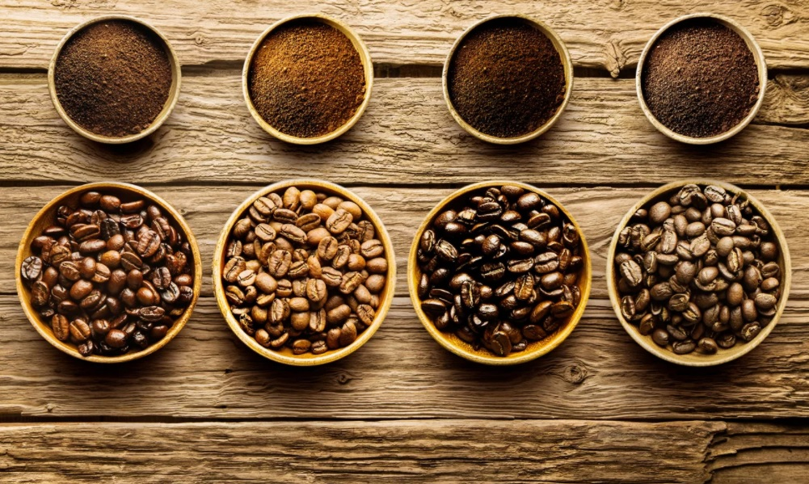
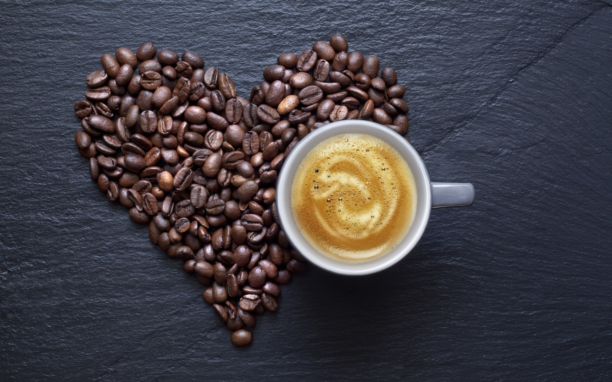
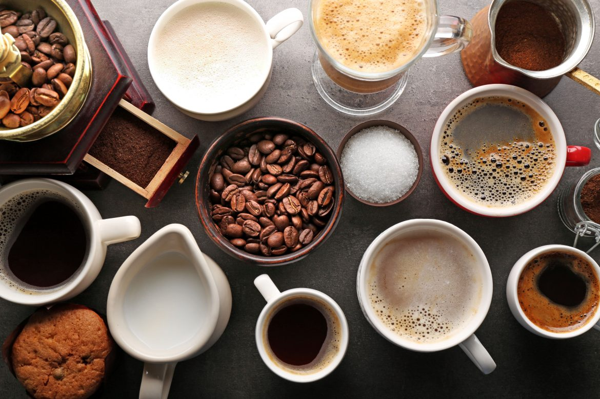
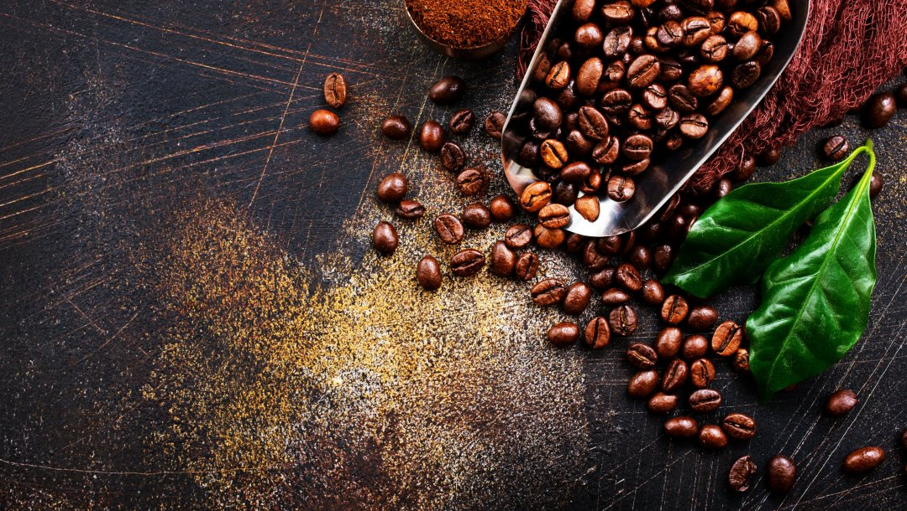

Основным психоактивным ингредиентом кофе является кофеин, он находится в более чем 60 различных растений включая кофейные зерна, чайные листья, семена какао и семена орехов кола. [33]
Помимо кофе, кофеин содержится в чае, безалкогольных напитках, особенно энергетических и шоколаде. Он также входит в состав некоторых лекарств, таких как средства от простуды, аллергии и боли. В порошкообразном виде кофеин имеет 100% концентрацию и может привести к случайной передозировке. [10]
В среднем, кофе и чай содержат 100 мг, кола – около 50 мг, энергетические напитки – до 250 мг кофеина на порцию.
Примерно 90% всех взрослых в мире употребляют кофеин ежедневно.
Для большинства здоровых людей употребление менее 400 мг кофеина в день (что равно пяти чашкам кофе), а у детей и подростков менее 2,5 мг/кг в сутки представляется безопасным.
Для большинства здоровых людей употребление менее 400 мг кофеина в день (что равно пяти чашкам кофе), а у детей и подростков менее 2,5 мг/кг в сутки представляется безопасным.
Кофе и чай содержат несколько химических компонентов, которые могут оказывать как благотворное, так и неблагоприятное воздействие на здоровье, включая кофеин и антиоксиданты (например, полифенолы, катехины и флавоноиды).
Кофеин может резко повысить артериальное давление до 10 мм рт.ст. у тех, кто редко пьет кофе [7], но снизить или никак не изменить давление у кофеманов [29]
Гипертензивный эффект может быть более заметным у пожилых людей с гипертонией. [28] По сравнению с кофе, чай, по-видимому, не оказывает влияния на давление. [32]
Кофе не влияет на уровень липидов в крови. Однако дитерпеноиды, содержащиеся в нефильтрованном кофе, могут повышать уровень холестерина липопротеидов низкой плотности («плохого холестерина») и снижать уровень холестерина липопротеидов высокой плотности («хорошего холестерина») [15].
Кофеин в обычных дозах (до 400 мг в день), не провоцирует аритмии, поэтому людям с нарушениями ритма можно пить кофе. [9] Тем не менее, лицам с заболеваниями сердца следует избегать приема «энергетических напитков» и других напитков с чрезмерным содержанием кофеина. Также следует отказаться от больших количеств кофеина людям, которые отмечают учащение сердцебиения при его приеме.
Низкое или умеренное потребление кофе (до трех чашек в день) может защитить от инфаркта миокарда. Однако те, кто пьют много кофе (больше 6 чашек в день), имели самый высокий риск инсульта в исследовании.
Кофеин действует как стимулятор, активизируя центральную нервную систему (ЦНС):

- Краткосрочные преимущества включают повышенное внимание, улучшение когнитивной деятельности и улучшение спортивных результатов. [31]
- Смягчает неблагоприятные последствия депривации сна. [30]
У отдохнувших людей кофеин в низких и умеренных дозах, приблизительно от 30 до 300 мг, улучшает бдительность и время реакции [6]. У людей, страдающих недосыпанием, кофеин помогает в обучении и принятии решений, а также в вождении автомобиля и даже самолета. [17] Люди, которые обычно пьют кофе и чай, лучше справляются с различными тестами на когнитивную деятельность, такими как время реакции и визуальное пространственное мышление. [14]
Систематический обзор 13 рандомизированных исследований доказал, что кофеин значительно улучшает формирование концепций, мышление, память, ориентацию, внимание и восприятие по сравнению с плацебо. [19]
Однако высокие дозы кофеина могут быть связано с краткосрочными неблагоприятными последствиями, включая головную боль, беспокойство, тремор и бессонницу.
Такие эффекты менее выражены у людей, которые постоянно пьют кофе.
Привычное употребление кофеина связано с хронической мигренью и с лекарственной головной болью. Головные боли также являются наиболее распространенным симптомом отмены кофеина. [2]
Прием кофеина связан с тревогой, нервозностью, бессонницей, раздражительностью и даже паническими атаками у здоровых добровольцев. Люди с уже существующими тревожными расстройствами могут быть восприимчивы к воздействию кофеина. [3]
Согласно многочисленным исследованиям, умеренное потребление кофе может иметь различные преимущества для здоровья.

- Кофеин снижает риск развития болезни Паркинсона [12], болезни Альцгеймера [1], цирроза печени [22] и подагры.
- Как кофеин, так и кофе без кофеина связаны с более низким риском развития диабета 2 типа. [13]
Хотя в ряде исследований потребление кофе связывалось с увеличением или уменьшением риска развития различных видов рака, окончательные данные отсутствуют.
Исследователи из Бразилии обнаружили, что крепкий черный кофе убивает бактерии на зубах, которые способствуют кариесу. Однако, добавление молока или сахара в кофе сводит это преимущество на нет. [24] Кофе также может защитить от заболеваний пародонта. [25]
Исследование, опубликованное в журнале Национального института рака США, показало, что риск развития меланомы уменьшается при употреблении кофе и что этот риск снижается с каждой выпитой чашкой. [23] Те, кто выпивал в день четыре чашки кофе или больше, имели на 20% более низкий риск развития злокачественной меланомы, чем те, кто пил меньше кофе.
С тех пор, как редакторы глянцевых журналов про красоту предположили, что отшелушивание свежей кофейной гущей может уменьшить появление целлюлита, актуальные продукты по уходу за кожей с кофеином резко возросли в популярности. По их словам, местное применение кофеина может временно сужать кровеносные сосуды, придавая коже более упругий вид.
Но некоторые эксперты считают, что эти результаты носят временный характер, если вообще существуют.
Тем не менее, некоторые научные данные свидетельствуют о том, что кофеин предотвращает чрезмерное накопление жира в клетках. [11] Одно исследование проверило эффективность крема для похудения, содержащего 3,5% водорастворимого кофеина для лечения целлюлита. Были отмечены статистически значимые улучшения в области бедер и предплечий на шестой неделе использования, но долгосрочные эффекты крема не оценивались. [4]
Принято считать, что беременным лучше избегать пить кофе, но систематический обзор 381 исследования не подтвердил эту идею. Он показал, что для здоровых беременных женщин употребление до 300 мг кофеина в день, не оказывает неблагоприятного влияния на плод. [34]
Также многие научные работы доказали обратную зависимость между потреблением кофе и смертностью от всех причин. [8, 26, 27] Возможное объяснение заключается в том, что здоровые люди с большей вероятностью выбирают содержащие кофеин напитки, чем те, кто болен.
Многие люди регулярно пьют кофе для поддержания своего активного образа жизни, поскольку он повышает умственную работоспособность и настроения. [21] Однако употребление кофеина в больших дозах может привести к вредным последствиям для здоровья.
Обзор 2015 года выявил несколько нежелательных побочных эффектов потребления более 400 мг кофеина в день, в том числе [5]:

- учащенное сердцебиение
- тревожность
- неусидчивость
- проблемы со сном
- тремор
-
Сон
- Хотя существование кофеиновой зависимости и злоупотребления являются спорными, отказ от кофеина имеет различные симптомы, причем головная боль является наиболее распространенным из них. [16]
- Другие проявления включают в себя: [16, 18]
- усталость
- утомляемость
- снижение энергии и активности
- снижение бдительности и внимательности
- сонливость
- подавленное настроение
- сложности при концентрации внимания
- раздражительность
- гриппоподобные симптомы, тошнота и мышечная боль
Симптомы отмены обычно возникают в течение 12-24 часов после прекращения приема кофеина, достигают пика через один-два дня и могут сохраняться в течение девяти дней. Тем не менее, для большинства людей кофе может быть здоровой частью рациона. Ключ – умеренность, которая составляет 2-3 чашки в день, чтобы получить преимущества для здоровья, но избежать негативных проблем, связанных с чрезмерным количеством кофеина.
Большинство исследований показали, что кофе с кофеином имел самые большие преимущества. Это связано с тем, что часть антиоксидантов из кофе удаляется в процессе декафеинизации.
Стандартная порция кофе содержит больше антиоксидантов, чем стандартная порция виноградного сока, черники, малины и апельсинов. Мета-анализ более чем 200 исследований пришел к выводу, что «потребление кофе кажется в целом безопасным и более вероятно, приносит пользу здоровью, чем вред». [35]
